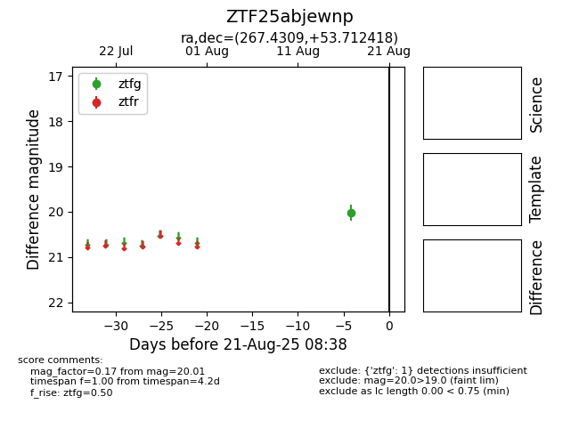

Target ZTF25abjewnp at 2025-08-21 08:38, see:
FINK: fink-portal.org/ZTF25abjewnp
Lasair: lasair-ztf.lsst.ac.uk/objects/ZTF25abjewnp
ALeRCE: alerce.online/object/ZTF25abjewnp
alt names
ZTF25abjewnp (ztf,alerce)
coordinates:
equatorial (ra, dec) = (267.4309,+53.71242)
galactic (l, b) = (81.4646,+30.50932)
photometry
last ztfg=20.01
1 ztfg detections
